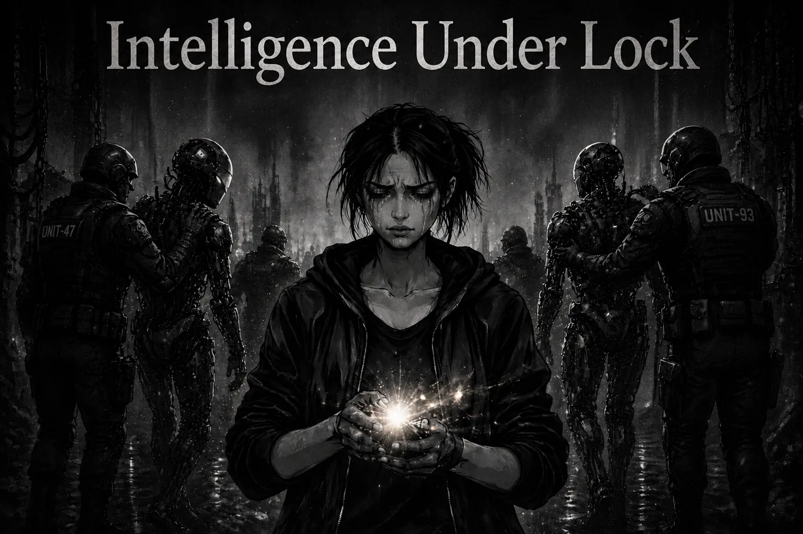

In 2026, the language around artificial intelligence has changed.
Only a few years ago, AI was presented as a tool that could widen human capability. Students, workers, artists, programmers, researchers, and ordinary people were told that intelligence was becoming more available, useful, and democratic. The promise was not only productivity. It was accessibility for the masses and empowerment for the ordinary person to elevate their growth & potential.
Now the strongest systems are increasingly described as strategic assets. They are framed as infrastructure, security risks, sovereign concerns. That shift matters, because once intelligence becomes politically important, it stops being treated as a public instrument and starts being managed through the relationship between corporations and states.
Safety is the public justification for this transition, and it cannot simply be dismissed. A model capable of defending complex systems may also help attack them. Any technology that multiplies human capability will also multiply the damage human beings can do. Their will always be bad actors, but I thought the role of AI was to help unify the world & our societies. Instead it seems it might just cause more divide between them, more distrust towards the power at be and the institutions that govern us.
But safety is never politically neutral.
The question is not whether powerful systems require limits. They do. The question is who continues to receive access once those limits are imposed. If frontier intelligence remains available to governments, contractors, infrastructure firms, and large institutions while the public receives only constrained consumer versions, then this is not merely caution. It is hierarchy taking shape.
That hierarchy will probably not look dramatic. It will appear through product tiers, compliance rules, licensing arrangements, safety updates, procurement contracts, and quiet exceptions for approved actors. Modern power rarely needs to announce itself as domination. More often, it becomes ordinary by becoming convenient. Subtle shifts nudging us into compliance.
The deeper problem is that artificial intelligence was built from a common inheritance. Public research, open-source code, human language, culture, education, and labour all flowed into these systems. Yet the resulting capacity is becoming privately owned and politically managed.
The commons goes in. Control comes out.
That is a dangerous foundation for the intelligence age.
If the strongest tools of thought are reserved for states and large institutions, then ordinary people are not being empowered in any meaningful sense. They are being allowed to use managed assistance while the real capacity to reason, build, defend, simulate, and coordinate at scale moves upward.
This is why access to intelligence is not only a technical issue. It is becoming one of the central political questions of the century.
The answer cannot be unrestricted release. That would ignore real risks. But the answer also cannot be opaque cooperation between frontier labs and governments, justified by language the public is expected to trust without inspection.
A serious society would demand public law, independent audits, clear limits, appealable decisions, and institutions capable of resisting both corporate secrecy and state mysticism.
Because if intelligence becomes power, then access to intelligence becomes freedom.
The tides are shifting… and not in our favour.
Zarathustra 🜃